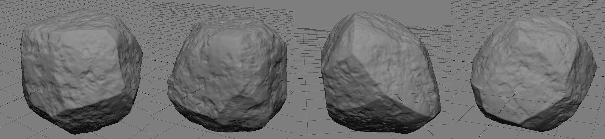
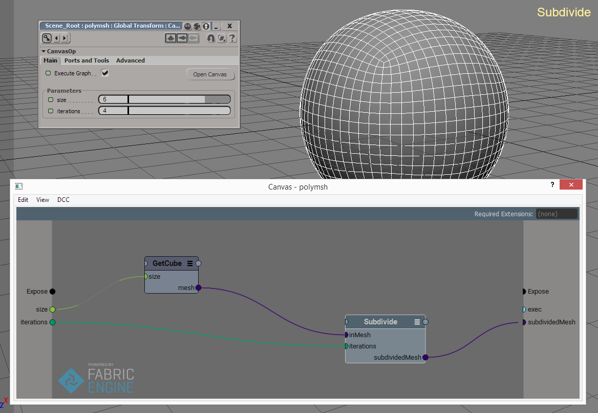
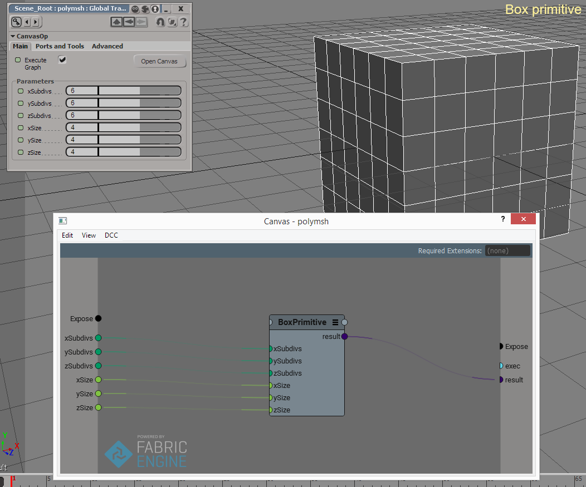
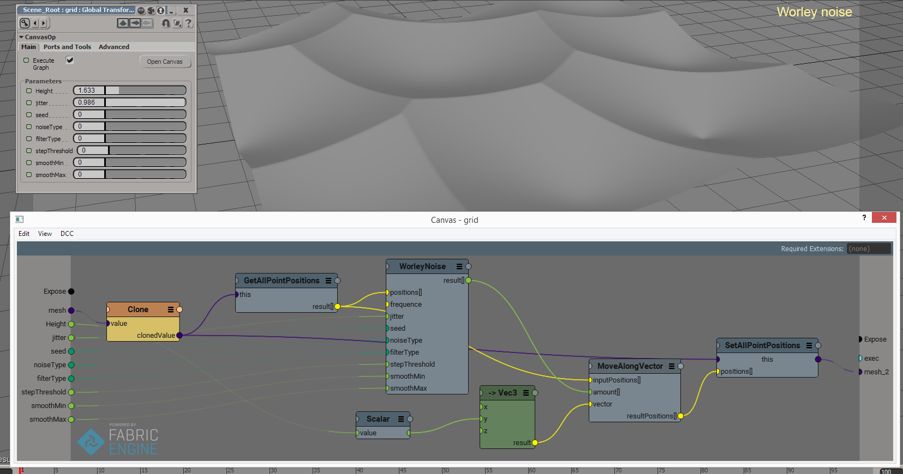
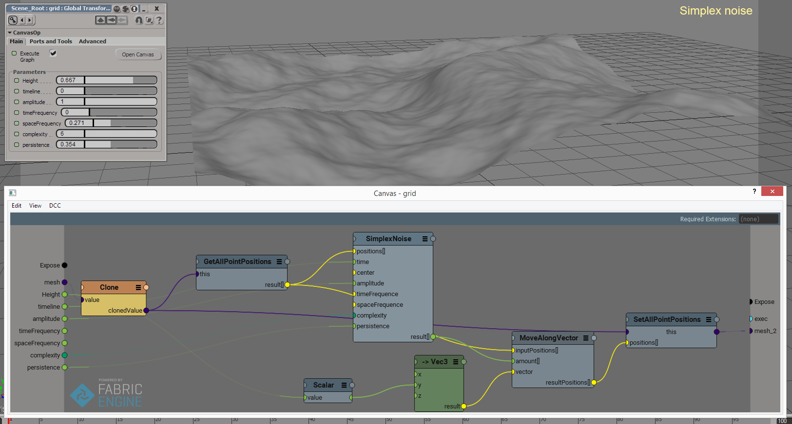
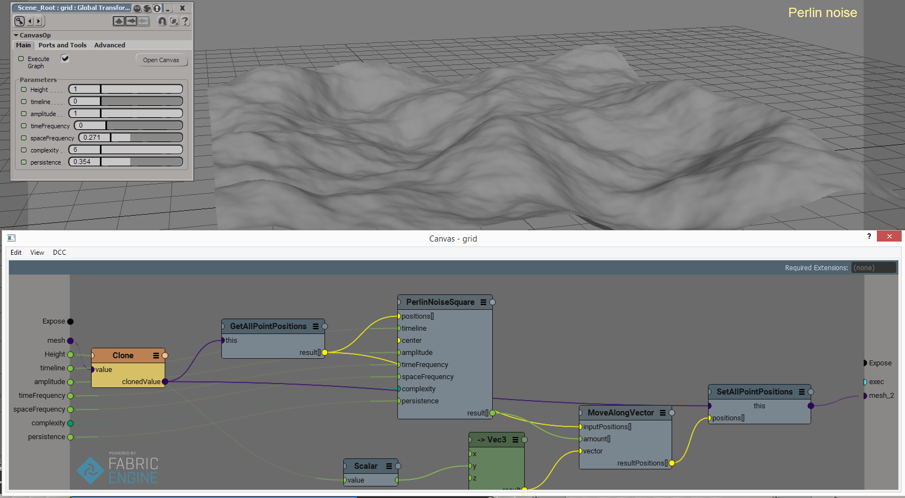

Rock generator
Last update: 11.03.2016
Description: This is a port of ICE-compound for rock generating (this compound) to Fabric Engine. Contains a set of additional helpfull compounds.
Download: version 1.2
Examples: Rock Generator compound
Subdivide compound
Box primitive compound
Worley noise compound
Simplex noise compound
Perlin noise compound
